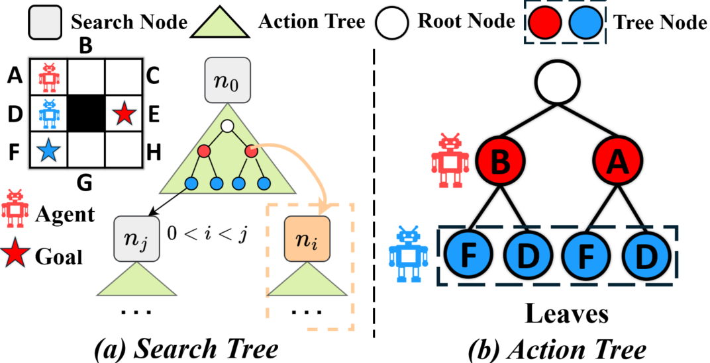
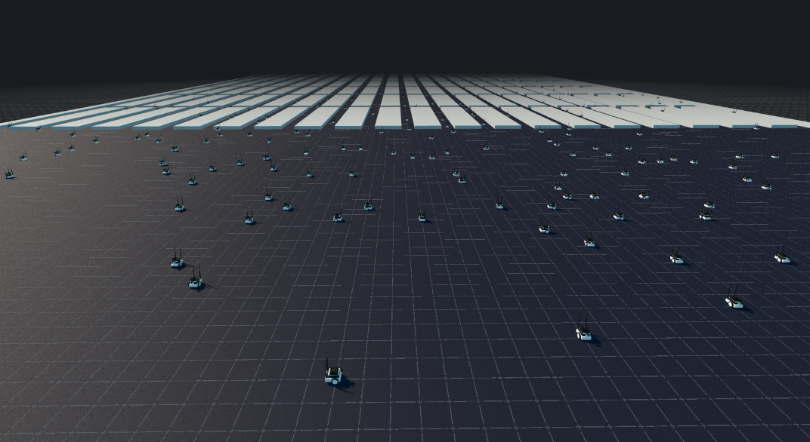

Shuai Zhou
|
CV |
Google Scholar |
Github |
Email |
LinkedIn |
Twitter
|
I am a final-year undergraduate student in Robotics at SCUT, currently visting HKUST (Guangzhou) and working on robot foundation model with Wenxuan Song.
Previously, I spent eight months at CMU working with Ding Zhao and Jiaoyang Li. Prior to that, I was at SJTU, working closely with Zhongqiang Ren and Sven Koenig.
I will continue my journey at CMU. I am always interested in building and deploying next-generation decision-making systems for robotics, pursuing two complementary directions: world action models or VLA frameworks for generalizable embodied reasoning, and the unification of classical control/planning with learned world abstractions for complex long-horizon tasks.
|
News
- [Mar, 2026] Join HKUST(Guangzhou) IPRN Lab to work on robot foundation model.
- [Aug, 2025] Join CMU Safe AI Lab to work on robot manipulation.
- [Jun, 2025] Start my visiting at CMU Robotics Institute.
- [May, 2025] LSRP* is accepted to SoCS 2025.
- [Apr, 2025] Join CMU ARCS Lab to work on learning for planning.
- [Dec, 2024] LSRP is accepted to AAAI 2025.
- [Apr, 2024] Join SJTU RAP Lab to work on path planning.
- [Aug, 2023] Start my exchange at UC Berkeley.
|
Selected Publications
|
| * denotes equal contribution; only first and co-first authored papers are listed |
|
|
LAMP: Long-Horizon Adaptive Manipulation Planning for Multi-Robot Collaboration in Cluttered Space
Shuai Zhou,
Yorai Shaoul,
Jiaoyang Li
Under Review
website |
video
|
|
|
Learning Versatile Humanoid Manipulation with Touch Dreaming
Yaru Niu,
Zhenlong Fang,
Binghong Chen,
Shuai Zhou,
Revanth Krishna Senthilkumaran,
Hao Zhang,
Bingqing Chen,
Chen Qiu,
Hongtei (Eric) Tseng,
Jonathan Francis,
Ding Zhao.
Under Review
website
|
|
|
Bridging Planning and Execution: Multi-Agent Path Finding Under Real World Deadlines
Jingtian Yan*,
Shuai Zhou*,
Stephen Smith,
Jiaoyang Li
Under Review
paper
|
|

|
LSRP*: Scalable and Anytime Planning for Multi-Agent Path Finding with Asynchronous Actions
Shuai Zhou,
Shizhe Zhao,
Zhongqiang Ren
International Symposium on Combinatorial Search (SoCS), 2025
paper |
website
|
|

|
Loosely Synchronized Rule-Based Planning for Multi-Agent Path Finding with Asynchronous Actions
Shuai Zhou,
Shizhe Zhao,
Zhongqiang Ren
AAAI Conference on Artificial Intelligence (AAAI), 2025
paper |
code
|
Services
- Reviewer: IROS (2026, 2025)
|
Miscellanea
- My Chinese name (surname first) is 周 帅.
- I am a former badminton athlete.
- I am from Shenzhen, China. I've also lived in Guangzhou, Shanghai, Berkeley, Los Angeles, Pittsburgh, Philadelphia, Taipei through my undergraduate years.
|
勤修戒定慧，息滅貪瞋癡
Copyright 2026 © Shuai Zhou
|
|